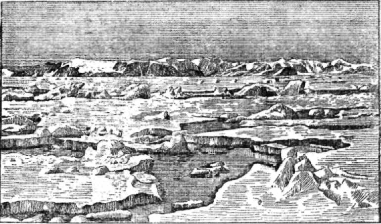
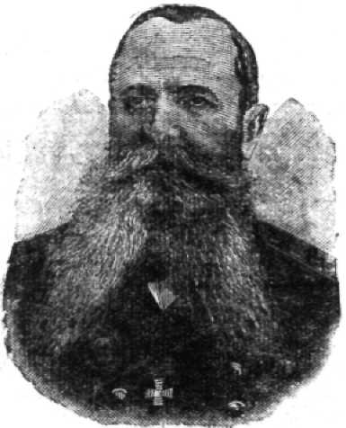
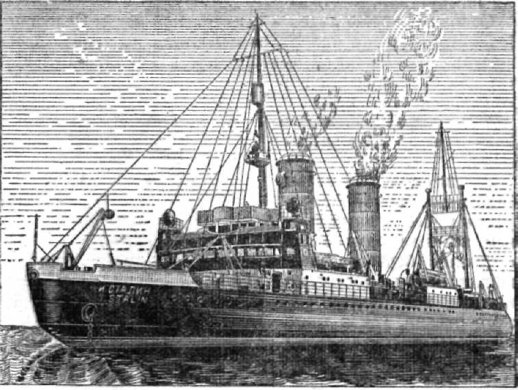

Морской лёд.

Обычная пресная вода замерзает при 0 градусов. Совсем другое дело в море. Чем выше солёность воды, тем ниже температура, при которой образуется лёд. Так, при солёности в 10 промиллей замерзание воды начинается при минус 0,5 градуса, а при солёности в 35 промиллей — только при минус 1,9 градуса.
При замерзании морской воды в лёд превращается только сама вода. Соли не образуют со льдом единой кристаллической массы. Они или вымораживаются на поверхности льдины, где образуют кристаллы затейливого узора — «ледяные цветы», либо образуют внутри льдов капельки рассола, куда временно «отжимаются» соли. Таким образом, лёд получается почти пресным. Нередко этим пользуются мореплаватели, чтобы запастись пресной водой при плавании в полярных морях.
При морозе в 30 градусов ледяные кристаллы смерзаются настолько плотно, что капелек с раствором солей между ними почти не остаётся. Лёд приобретает большую прочность и становится совсем пресным.
Толщина морского льда редко бывает более двух метров. Однако различные нагромождения льдов — так называемые торосы — встречаются и более мощными. Над водой возвышается только 1/7—1/8 часть общей толщины льда. Остальная часть находится под водой.
Как образуется лёд?
Сначала в воде появляются ледяные иголки — кристаллы. Постепенно смерзаясь на поверхности моря, они приобретают вид плёнки. Эту плёнку льда называют «салом». Обычно волнение в море препятствует образованию сплошного ледяного покрова на больших пространствах, и плёночки сала, смерзаясь, образуют небольшие ледяные блины — до 30 сантиметров в диаметре. Эти блины сталкиваются друг с другом и по их краям образуется характерный бортик. В таком виде этот лёд называют блинчатым льдом.
В дальнейшем блинчатый лёд смерзается в льдинки до 10 сантиметров толщиною; их называют «молодиком». Молодик растёт и сверху и снизу: падающий снег образует на нём легко замерзающую ледяную кашицу, а снизу идёт намерзание льда в результате прилипания всё большего и большего количества ледяных кристаллов, образующихся в верхнем слое морской воды. В результате образуется льдина до метра толщиною и в несколько гектаров площадью.
Жизнь таких льдин недолговечна. Ветер сталкивает льдины друг с другом, и они разламываются. По краям от сильных ударов образуются нагромождения мелких кусков льда, и получается ледяной вал в 2–3 метра высотой. Так растут торосы (рис. 5). Они часто являются непреодолимой преградой даже для мощных ледоколов.

Рис. 5. От столкновения льдины громоздятся друг на друга — образуются торосы.
Образовавшиеся между льдами разводья при спокойной погоде вновь заполняются молодым льдом. Он способствует смерзанию обломков больших льдин в одну сплошную массу. Таким образом, вал торосов, находившийся сначала по краям льдины, может оказаться в середине большого ледяного поля. Под действием ветра и течений эти льды снова ломаются, между ними вновь образуются разводья.
Во многих морях умеренного пояса льды появляются только зимою. Совсем другое дело в полярных морях. Здесь льды имеются и зимою и летом. Только летом замерзание морской воды или прекращается, или очень замедляется; лишь в некоторых полярных районах летом идёт таяние и появляются большие пространства чистой воды.
Разрежение льдов летом в сибирских полярных морях бывает настолько большим, что сейчас проложен великий Северный морской путь, по которому советские корабли плывут из Мурманска и Архангельска на Дальний Восток и обратно.
Осенью и зимой замерзание воды идёт очень быстро, и море покрывается ледяными полями, между которыми остаются лишь узкие пространства чистой воды — полыньи. В морях так же, как и на больших озёрах, сплошной покров льда образоваться не может. Течения, волны, приливы и отливы и особенно ветер взламывают такой сплошной покров на отдельные ледяные поля.

С. О. Макаров (родился 8 января 1849 года, умер 13 апреля 1904 года).
Лёд, образовавшийся в полярных морях, выносится ветром и течениями на север — в Северный Ледовитый океан. Здесь из отдельных небольших ледяных полей площадью в 1–2 гектара образуются мощные ледяные поля в десятки гектаров. Ветер и солнце сглаживают старые торосы, торчащие среди этих льдин, и образуются довольно ровные поля, могущие даже служить аэродромом для больших самолётов. Так, например, ледяное поле, на котором в 1937 году была организована советскими полярниками станция «Северный полюс», могло принять 4 больших самолёта.
Огромные ледяные поля всегда находятся в движении; они плывут или, как говорят, дрейфуют.
Основной дрейф льдов в центральной части Северного Ледовитого океана направлен с востока на запад. Здесь пространство между Шпицбергеном и Гренландией служит как бы главными воротами, через которые идёт разгрузка льдов Северного Ледовитого океана.
А льдов в Северном Ледовитом океане образуется много. Они сплошным потоком идут вдоль восточных берегов Гренландии, пока не достигают тёплых вод Атлантического океана, где и тают. В большинстве своём льды, прошедшие через центральную часть Северного Ледовитого океана, — старые многолетние льды. Подсчитано, что путь от Чукотского моря до пролива между Гренландией и Шпицбергеном льды проходят в пять-шесть лет.
Для плавания во льдах строятся специальные корабли — ледоколы. Первые в мире ледоколы были построены у нас, в России.
Отцом ледокольного флота является русский адмирал Степан Осипович Макаров. Этот выдающийся учёный и замечательный моряк разработал основы устройства ледокольного корабля и построил ледокол «Ермак», плавающий до сего времени.
В основу устройства ледокольного корабля Макаров положил срезанный нос, как у саней, и яйцеобразные обводы корпуса корабля. Такой корабль въезжает на лёд и тяжестью своего корпуса продавливает его. Благодаря своему яйцеобразному корпусу, он не будет раздавлен льдами во время их сжатия, как обычный корабль, а будет выжат на лёд.

Рис. 6. Ледокол «И. Сталин». Видны срезанный нос и яйцеобразная форма корпуса.
Используя опыт «Ермака», кораблестроители построили ещё более мощные ледоколы для обслуживания Северного морского пути. Таковы новые ледоколы «И. Сталин» (рис. 6), «В. Молотов» и другие.